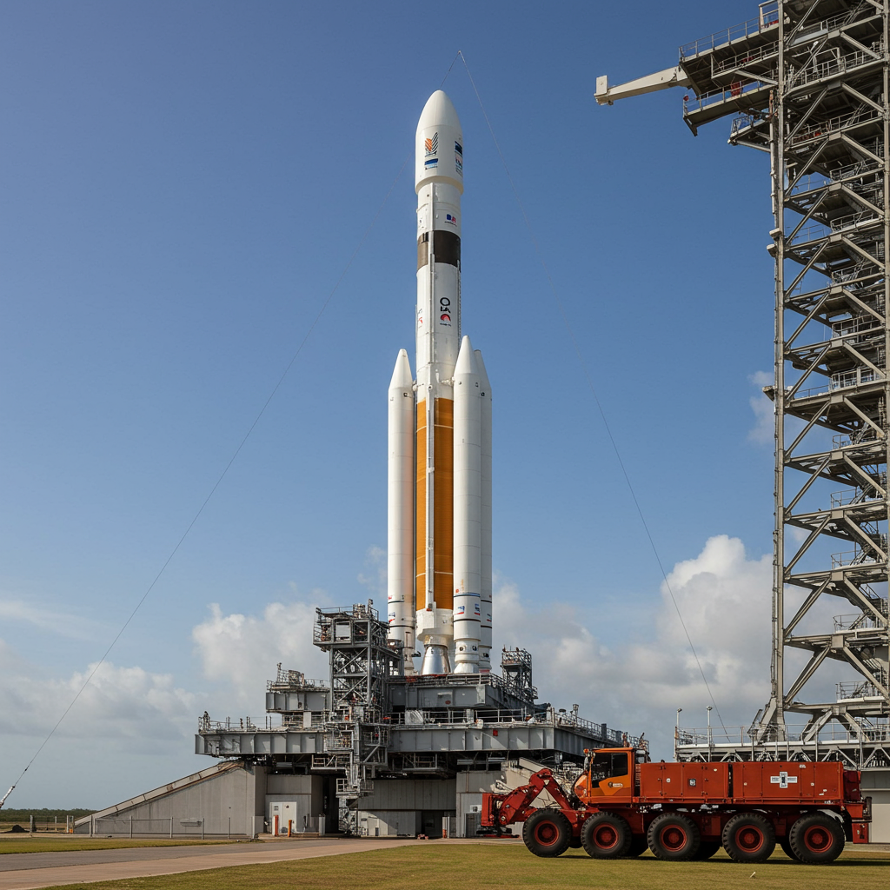
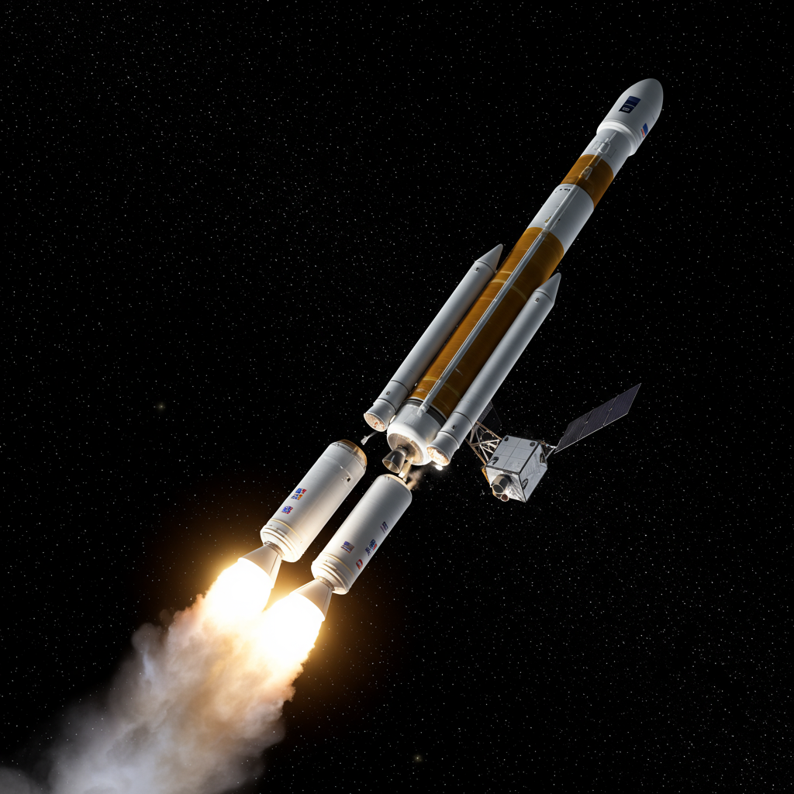

Lanzamiento de Telescopios y Satélites
El envío de telescopios y satélites al espacio se realiza mediante cohetes de varias etapas. Aunque no transportan tripulación, suelen usar lanzadores similares (Atlas, Ariane, Falcon, Soyuz) que brindan la potencia suficiente para superar la gravedad terrestre.
Etapas del Lanzamiento
El cohete se divide en etapas:
- Primera etapa: Proporciona el mayor empuje para salir de la atmósfera densa. Usualmente se desprende y puede recuperarse (Falcon 9) o caer al mar (Soyuz, Ariane).
- Segunda etapa: Aumenta la velocidad hasta alcanzar la órbita deseada. También puede desecharse o quemarse en la atmósfera.
- Etapa superior / propulsor extra: Realiza ajustes precisos de órbita y libera la carga.

Propulsores e Impulsores
Los propulsores pueden:
- Caer controladamente en el océano o desiertos.
- Ser recuperados y reutilizados (SpaceX).
- Reingresar y desintegrarse en la atmósfera.
¿Basura Espacial?
Sí, algunas etapas y fragmentos quedan en órbita, generando basura espacial. Para mitigar esto, existen regulaciones internacionales que obligan a:
- Planificar reentradas controladas.
- Dejar satélites en órbitas cementerio al final de su vida útil.
- Usar tecnologías para desorbitar o desintegrarse en la atmósfera.
Estas medidas reducen el riesgo de colisiones y mantienen el espacio útil para futuras misiones.

Importancia del Proceso
Comprender este proceso es esencial para valorar el esfuerzo tecnológico detrás de cada misión y la responsabilidad de mantener el entorno espacial limpio y seguro.
⬅ Regresar al Archivo de Telescopios